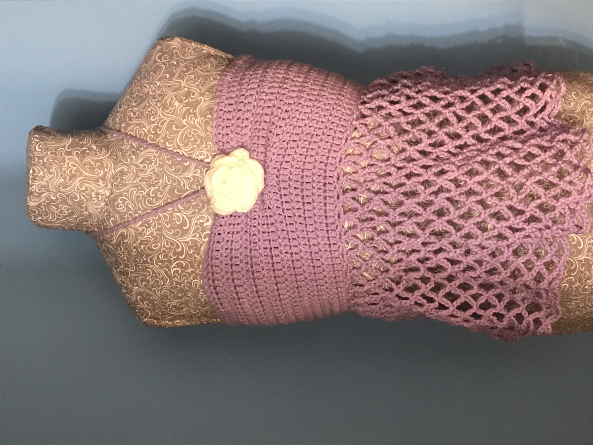

This pattern is about a medium but it has a corset in the back so
the size is adjustable.

Materials: 2 Yarn colors: one main color and one color for the rose,
Crochet Hook, Skissors, Lardge Sewing Needle.
Notes: The string for the corset in the back will depend on how you want it to fit.
You will make it as long or as short as you want. The same will be for the neck strap.
You will measure yourself to see how long or short you want it. The size of this tank
top is about a medium but the only thing you would have to change to make it bigger or
smaller is more/less stitches when starting the tank top.
Please do not copy this pattern, sell this pattern, or call it your own. You can make it yourself and sell it
or reference the website. If you have any questions, please feel free to contact me.